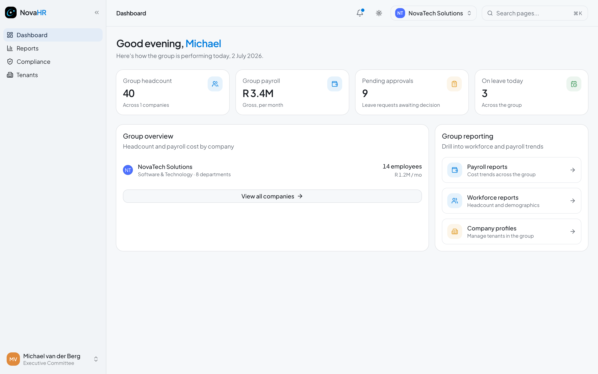
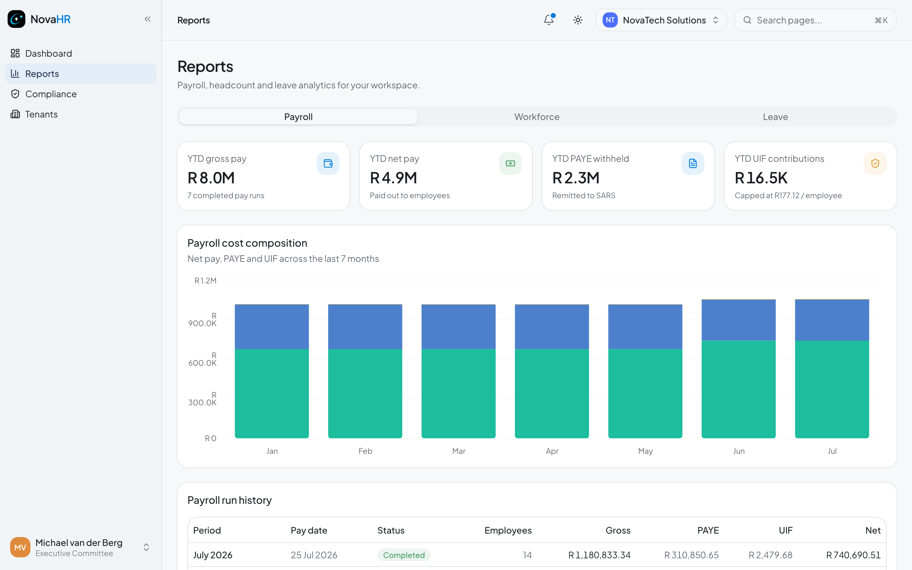
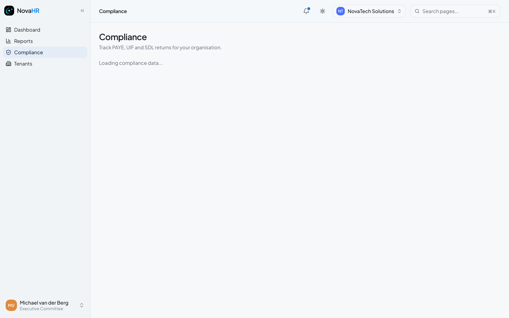
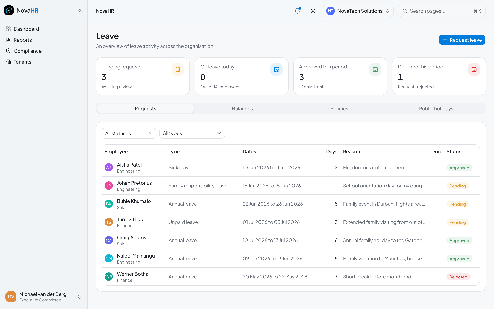

Executive
User Manual
South African HR and Payroll Platform
Strategic oversight of your organisation through NovaHR
Executive (Exco) RoleSouth African HR and Payroll Platform
Strategic oversight of your organisation through NovaHR
Executive (Exco) RoleAs an executive you have read-only access to all dashboards, reports, and compliance records in the company. You can see everything HR can see in terms of strategic metrics, but you cannot make any changes: no editing employees, no running payroll, no approving leave, and no changing settings. Your role is oversight and informed decision-making.
Company-wide KPIs at a glance

1 2 3 4 5 6 7Three dashboards covering workforce, payroll, and leave

1 2 3 4The Workforce report gives you a people-level view of your organisation:
The Payroll report shows company payroll cost data:
| Metric | What it tells you |
|---|---|
| Monthly gross payroll trend | How total payroll cost has moved over the last 7 months |
| Net vs. PAYE vs. UIF chart | Breakdown of where the gross goes: employee net, tax, and levies |
| Year-to-date total | Cumulative payroll spend for the current tax year |
The Leave report helps you spot patterns in how the team uses their leave:
PAYE, UIF, and SDL return status across all periods

1 2 3 4The Compliance page shows you the statutory tax position for the company. As an executive this is read-only: you can see the amounts and filing status but cannot update them. Only HR administrators can record a submission or mark a return as accepted.
| Status | What it means |
|---|---|
| Pending | Tax calculated but not yet filed with SARS |
| Submitted | Filed with SARS; awaiting confirmation |
| Accepted | SARS confirmed the return |
| Rejected | SARS returned the filing; HR needs to re-file |

Go to Leave in the sidebar to see all leave requests across the company. As an executive you have a read-only view: you can see who has requested what and the approval status, but you cannot approve, reject, or submit leave requests.
| Question | Where to find the answer |
|---|---|
| How many employees do we have? | Dashboard stat card (top left) or Reports > Workforce |
| What is our monthly payroll cost? | Dashboard (payroll stat card) or Reports > Payroll |
| How much have we spent on payroll this year? | Reports > Payroll > Year-to-date total |
| Are our tax returns up to date? | Compliance page (look for any Pending or Rejected statuses past the due date) |
| How many people are on leave today? | Dashboard stat card (top right) |
| What leave is coming up this month? | Leave page (filter by date) |
| Which department is biggest? | Reports > Workforce > Department breakdown |
| What is the split between full-time and contract? | Reports > Workforce > Employment type |
If you need to make a change (for example updating your own profile, correcting a compliance record, or getting a salary report), contact your HR administrator. For platform support, email: mtshwenewesley@gmail.com